使用Burp, Sqlmap进行自动化SQL注入渗透测试
在OWSAP Top 10中，注入型漏洞是排在第一位的，而在注入型漏洞中，SQL注入是远比命令行注入、Xpath注入、Ldap注入更常见。这就是本章要讲述的主要内容：在web应用程序的渗透测试中，如何使用Burp和Sqlmap的组合来进行SQL注入漏洞的测试。在讲述本章内容之前，默认为读者熟悉SQL的原理和SqlMap的基本使用，如果有不明白的同学，请先阅读《SQL注入攻击与防御》一书和SqlMap手册（最好是阅读官方文档）。
本章包含的内容有：
- 使用gason插件+SqlMap测试SQL注入漏洞
- 使用加强版sqlmap4burp插件+SqlMap批量测试SQL注入漏洞
使用gason插件+SqlMap测试SQL注入漏洞
在正式开始本章的内容之前，我们先做如下两点约定：
- 你已经安装配置好了python可运行环境
- 你已经熟悉sqlmap的基本命令行的使用并正确安装
如果你已经做到了上面的两点，那么，我们正式开始进入本章的内容。
Burp Suite与SqlMap整合的插件除了BApp Store 中的SQLiPy外（如图），
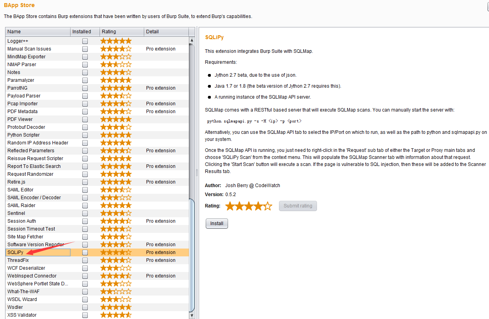
还有gason和sqlmap4burp。不同的插件之间的功能大同小异，其目的都是使用命令行调用SqlMap的API接口进行SQL注入的测试，这里，我们主要以gason为例，讲述具体配置安装和功能使用。
gason插件安装使用大体分以下几个步骤：
首先是下载gason插件。你可以从这个地址进行下载（点击下载），也可以从官方下载源码自己编译，总之就是获取到插件的安装文件gason-version.jar
打开Burp Extensions进行安装，点击【Add】按钮，按照图中所示操作即可。安装过程很简单，如果不明白的话，可参考《Burp Suite应用商店插件的使用》章节的内容。 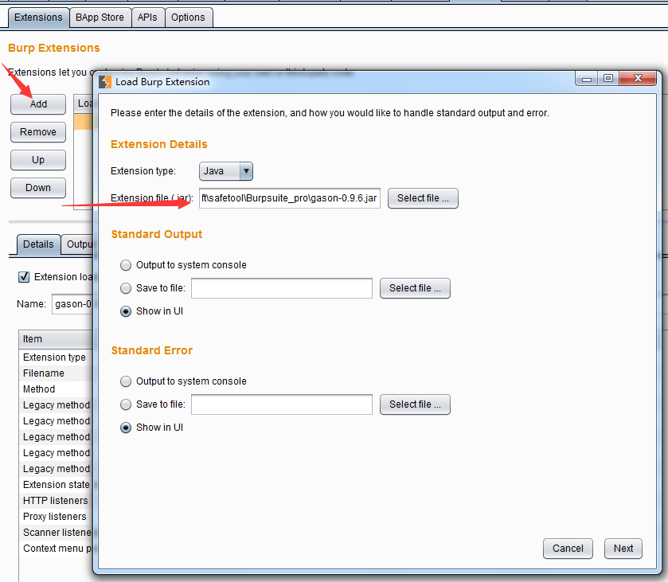 如果出现了下图中所示结果，且【Output】和【Errors】两个tab页面中没有错误的提示信息，表示插件已安装成功。 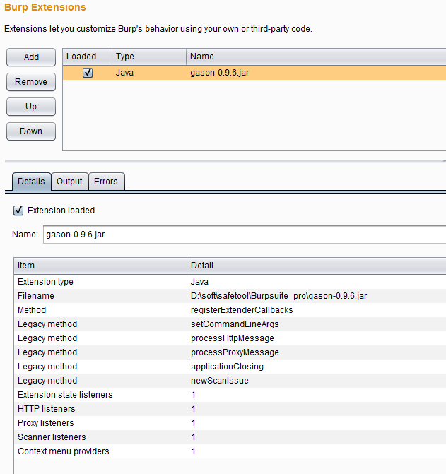
安装完成后，当Burp的Proxy中拦截到消息记录时，可直接发送到sqlmap。如下图所示： 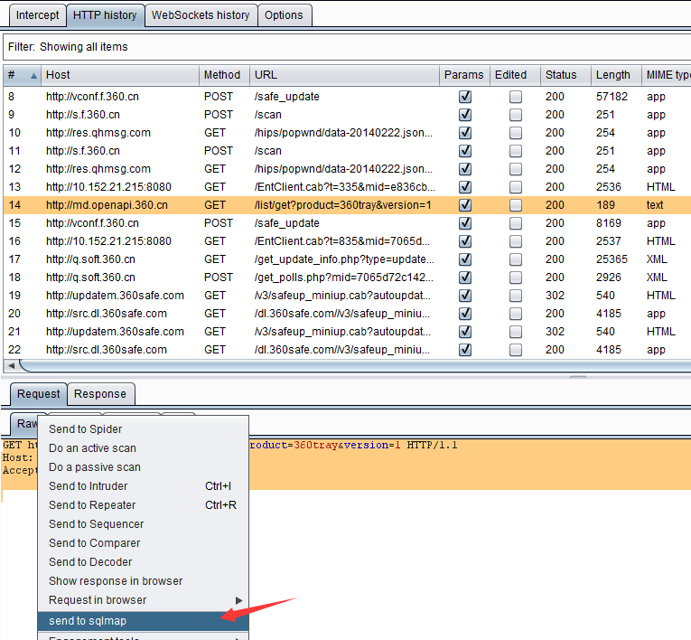
如果没有出现如上图所示的【send to sqlmap】菜单，则表示插件没正确安装成功，需要读者自己排查一下安装失败的原因。
当我们在Burp拦截的请求消息上选择【send to sqlmap】后，则自动弹出sqlmap选项设置对话框。 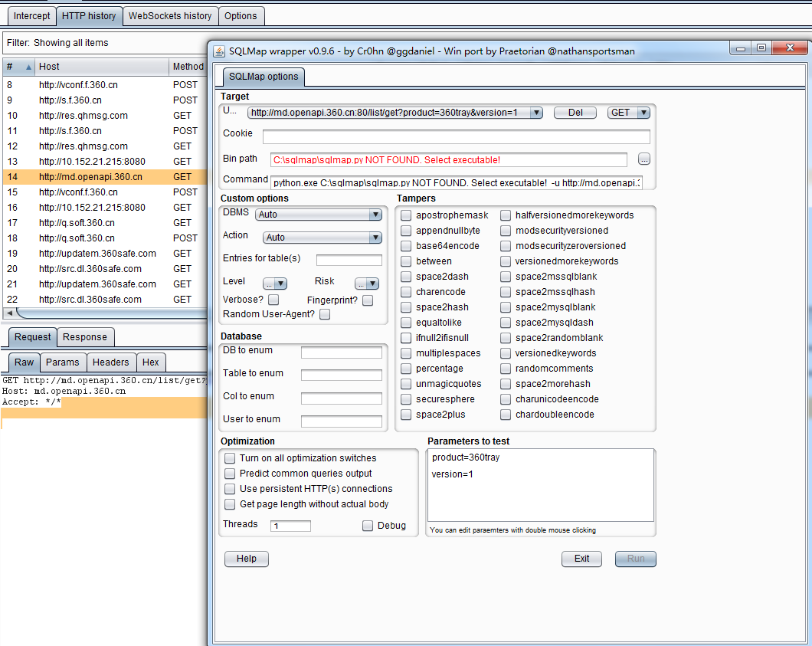 从图中我们可以看出，插件会自动抓取消息内容并解析后填充到相关参数设置的选项里去。例如：参数和参数值，请求方式（GET/POST），url地址等。同时，还有许多与Sqlmap本身测试使用的选项值仍需要我们自己指定，其中最主要的两个是：
bin目录：这里是指sqlmap.py的路径
Command：sqlmap运行时执行的命令行
6.设置bin目录的方式很简单，点击【....】按钮，选择到sqlmap.py的存储路径即可。当bin path配置正确后，下方的Command会自动更新，随着设置参数的不同，自动调整需要执行的sqlmap命令行（如果不理解界面操作各个设置的含义，可以比较设置前后Command值的变化，即可以知道某个设置对应于sqlmap参数的哪一个选项）。 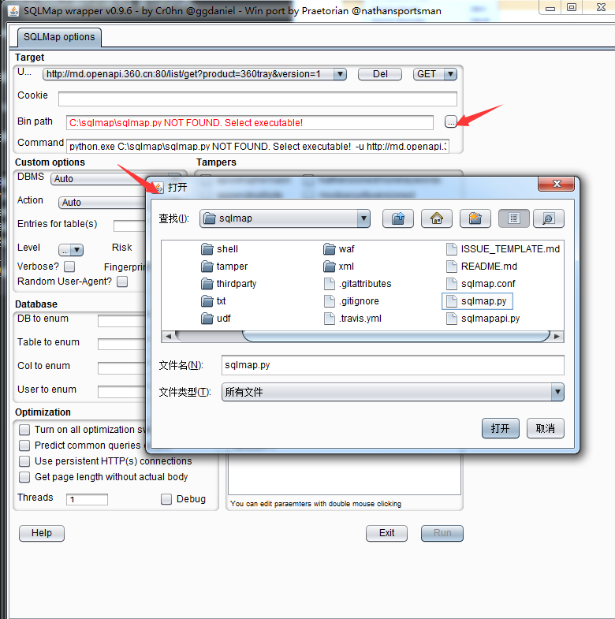
7.所有的配置正确之后，【run】按钮将被激活，点击【run】，系统自动进入sqlmap扫描阶段。
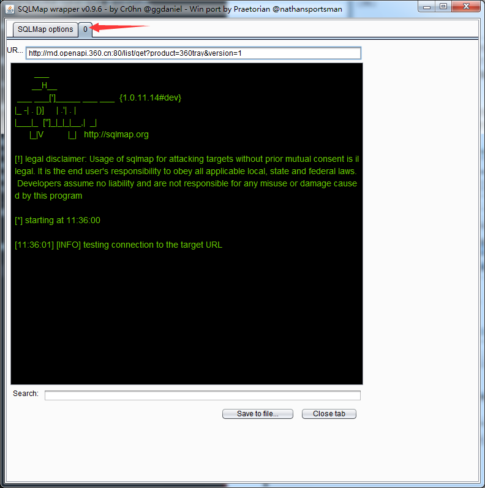 当进入sqlmap扫描阶段时，插件会新增一个tab页面，显示执行进度，即如上图的箭头所指。
8.我们可以通过进度跟踪的界面上的【save to file】和【close tab】来保存扫描结果和关闭、终止扫描。
使用gason插件，与命令行方式执行sqlmap脚本相比，操作变得更加方便。比如说，在命令行环境中，我们需要先抓取cookie信息，才能放入到命令行里执行；亦或者，我们需要手工录入一个个参数进行命令行操作，而在gason插件环境中，这些都不需要。当我们点击【send to sqlmap】时，插件自动帮我们完成了这些操作。且与sqlmap个性设置的选项，我们也可以通过界面操作，自动完成，比命令行下更直观、更高效。
使用加强版sqlmap4burp插件+SqlMap批量测试SQL注入漏洞
如果你只想执行一次sqlmap的操作，即能完成多个链接地址的SQL注入漏洞测试，使用gason插件的方式操作起来会比较麻烦。那么，是否存在批量检测的使用方法呢？ 国内比较著名的安全网站freebuf上有两篇类似的文章，感兴趣的同学可以自己阅读看看。
- 【优化SQLMAP的批量测试能】http://www.freebuf.com/sectool/75296.html
- 【我是如何打造一款自动化SQL注入工具】http://www.freebuf.com/sectool/74445.html
通过上面的两篇文章，我们可以看出，批量操作在实际应用中非常常见，如果能解决批量问题，则大大地提高了我们的工作效率，下面我们一起来研究一下如何解决这个问题。
在Sqlmap的官方文档中有这样的介绍： 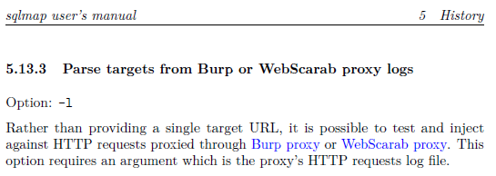
从这段话中我们可以看出，sqlmap可以通过 -l 参数，一次检测多个url的注入问题，这个参数的值是Burp proxy或者WebScarab proxy的日志文件。那么，我们是否可以通过插件的方式，自动生成类似的日志文件，然后调用sqlmap，解决批量检测的问题？答案当然也是肯定的。
在github上，网友difcareer公开了一个Burp插件sqlmap4burp，源文件地址为：https://github.com/difcareer/sqlmap4burp。我们就基于此插件的功能拓展，来完成自动化批量SQL测试的功能。
首先，我们来规划一下这个插件的使用场景：
当通过Burp代理的HTTP流量消息都记录在HTTP History 列表中，我们可以批量地选中多个url，由插件自动生成类似Burp proxy的日志文件，然后调用sqlmap进行检测。
插件整个使用过程的流程图如下： 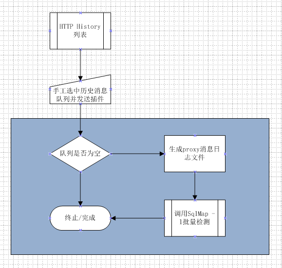
上图中浅蓝色背景标示的部分，均为插件所执行的动作。其主要做了这些事情：
- 判断选中数据是否为空，不为空则获取History列表的已选中数据，无论一条还是多条记录。
- 将获取的HTTP消息按照proxy日志的格式，生成日志文件。
- 调用sqlmap.py脚本，传递生成的日志文件作为参数值进行检测。
明白了这些，接着我们来看proxy的日志文件格式。
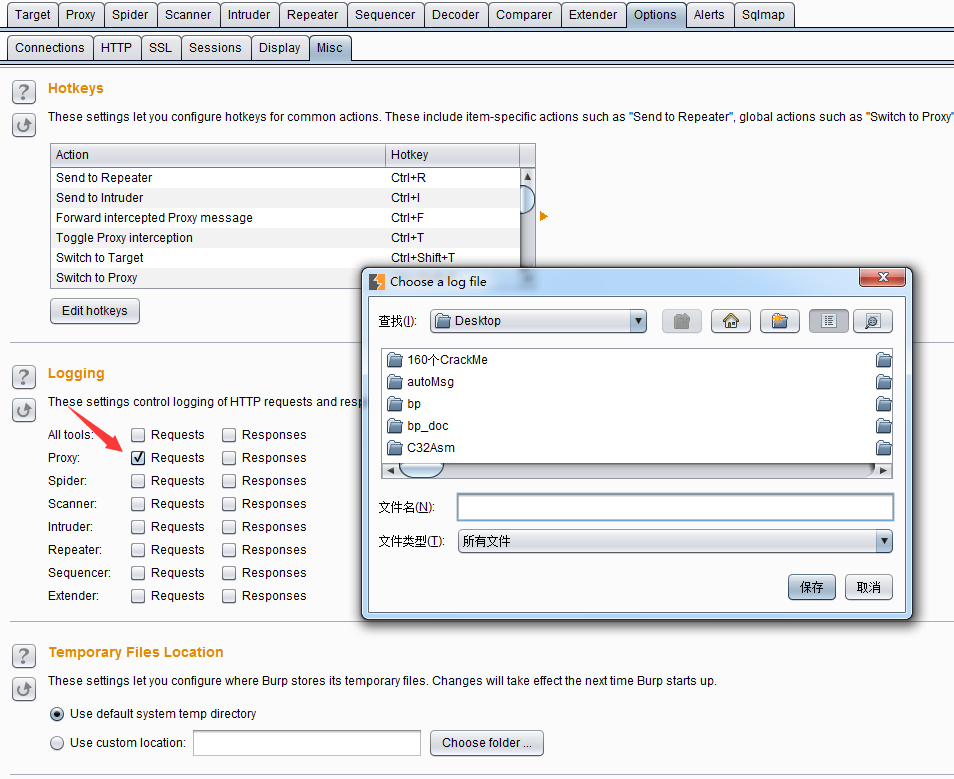
如上图所示，我们通过【Options】>>【Misc】>>【Logging】选中Proxy的Requests选项，自动弹出保存日志文件的路径和文件名，点击【保存】按钮后，则文件生成并开始记录Proxy的请求消息。 我们把生成的日志文件用记事本打开后发现，日志格式如下：
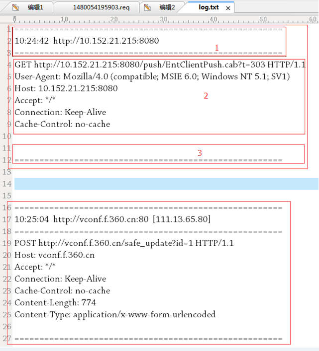
上图一共两条消息，每一条消息内容又包含图中1的头部，图中2的消息内容和图中3的尾部构成，而图中2的部分即是消息请求的详细内容，则我们按照此格式手工构造日志文件，通过修改sqlmap4burp的源码（Windows环境下）从而来完成这个功能。
在源码SnifferContextMenuFactory.java的我们找到了日志获取的入口createMenuItems函数内部的actionPerformed函数，遂修改此段代码为： 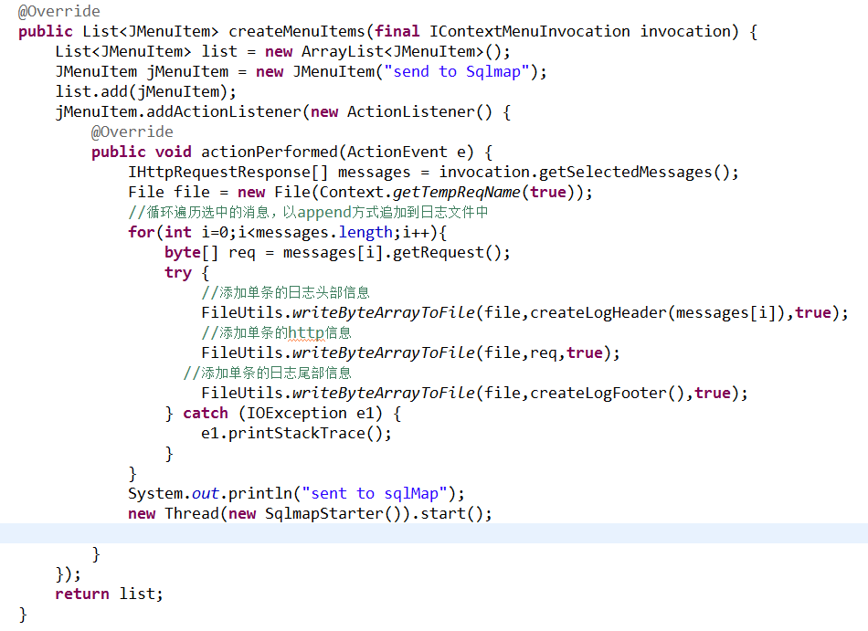 而创建日志头部和尾部的代码主要是拼写同格式的字符串，详细如下： 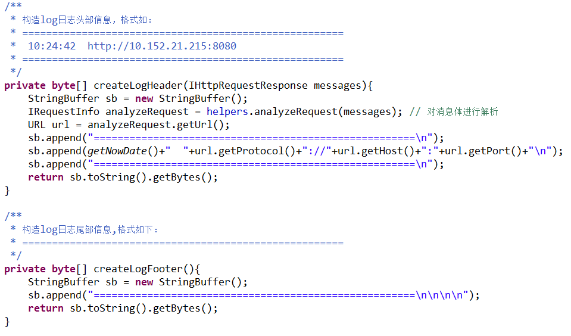
同时，修改sqlmap参数的调用方式，修改SqlmapStarter.java的第21行为： 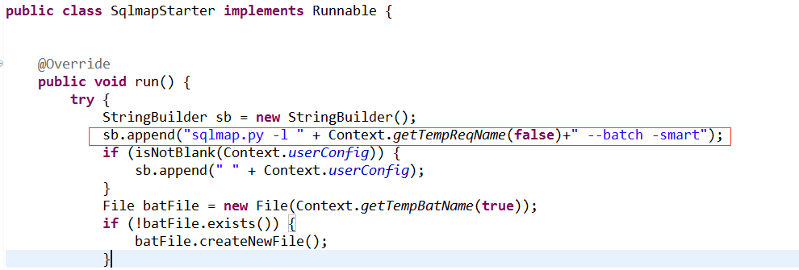
这样，我们可以实现批量操作的功能了。
下载完毕后，请参考sqlmap4burp的readme完成基本的配置放可以使用，否则sqlmap调用将会失败，无法完成批量检测。
插件安装完毕后显示跟原来的插件并无多大区别，如下图是发送多条url到SqlMap的截图：
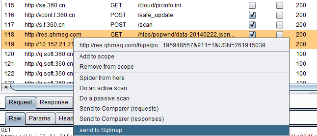
生成的日志文件的截图：
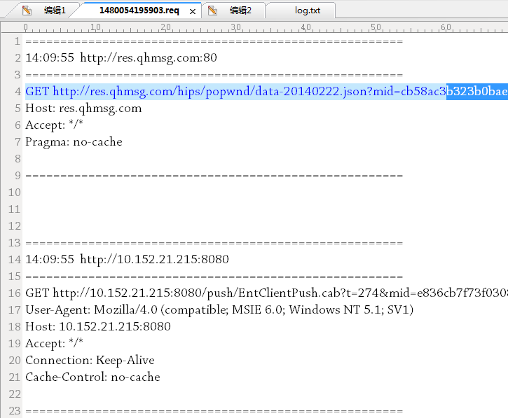
sqlmap窗口中一次可以检测多个ur截图：
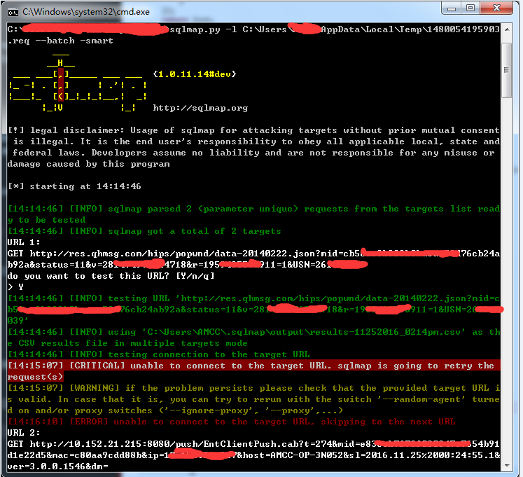